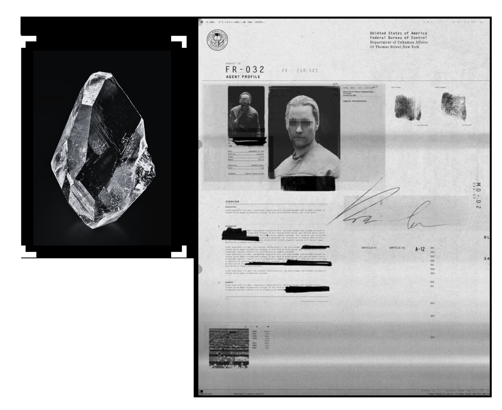

RESEARCH STATUS
│ Active Research Projects : 24
│ Containment Studies : 08
│ Chris-gear Samples Secured : 112
│ Restricted Files : 39
│ Research Clearance : BETA REQUIRED
│ Containment Studies : 08
│ Chris-gear Samples Secured : 112
│ Restricted Files : 39
│ Research Clearance : BETA REQUIRED
SEARCH RESEARCH DATABASE
[ SEARCH FILE ...................... ]
Category : [ ALL ▼ ]
Clearance : [ PUBLIC ▼ ]
Research Type : [ ALL ▼ ]
ACTIVE RESEARCH PROJECTS
PRIORITY ALERTS
Resonance Stability Project
Rustborn Neural Analysis
Ar-drive Synchronization
Project : NEXUS PRIME
[ VIEW ALL PROJECTS ]
Rustborn Neural Analysis
Ar-drive Synchronization
Project : NEXUS PRIME
[ VIEW ALL PROJECTS ]
⚠ Stage V Mutation Detected
⚠ Unauthorized Lab Access
⚠ Chris-gear Energy Spike
⚠ Rust Surge Risk Increased
[ OPEN ALERT LOG ]
⚠ Unauthorized Lab Access
⚠ Chris-gear Energy Spike
⚠ Rust Surge Risk Increased
[ OPEN ALERT LOG ]

FILE : Resonance Study #04
------------------------------------------------------------
Classification : Chris-gear Synchronization
| | Clearance : BETA
| | Status : ACTIVE
|
| | Summary :
| | Long-term exposure to unstable Chris-gear may
| | accelerate Rust Corrosion beyond predicted limits.
|
| | Lead Researcher : Dr. Elena Voss
| | Last Updated : 03:14 UTC
|
| | [ VIEW FULL FILE ]
RESTRICTED ARCHIVE
[REDACTED FILE]
| Project : NEXUS PRIME
| Status : CLASSIFIED
| Clearance Required : ALPHA
|
| “The origin of Chris-gear remains unknown.”